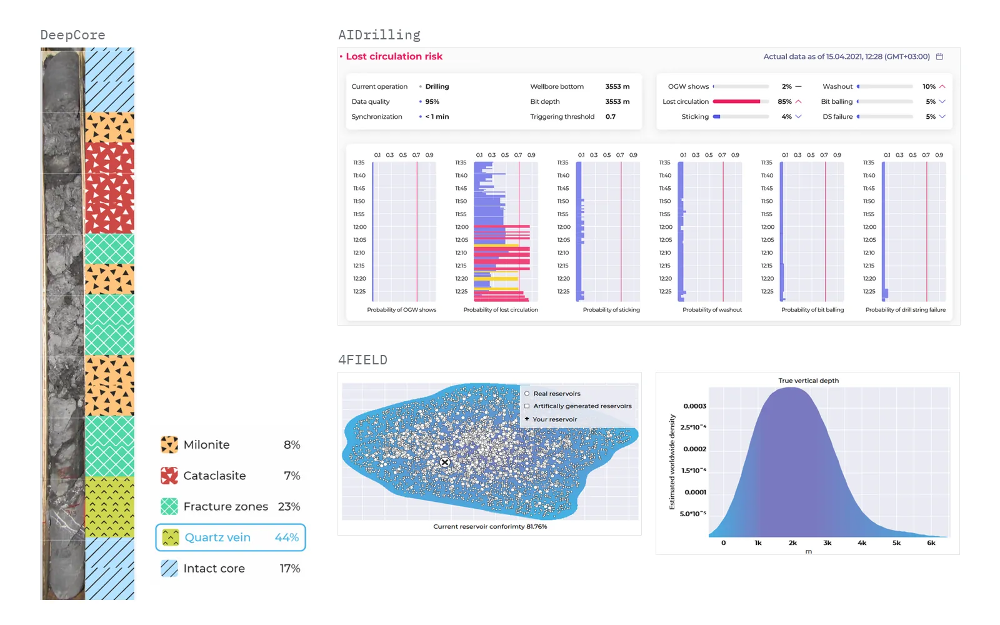
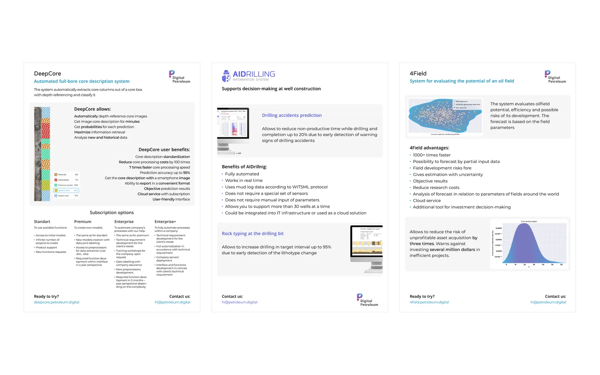

Product design for AI tools in oil and gas
At Digital Petroleum, a company co-founded by Skoltech that builds AI tools for oil and gas, I was the lead UI/UX designer from 2020 to 2022. I designed and prototyped three web apps, DeepCore, AIDrilling and 4FIELD, managed their front-end development, and reworked the company brand and conference handouts.
The problem
Each model had to reach geologists, drilling engineers and asset teams as a cloud web app they could use without knowing machine learning. Each product had the same tension. The model is fast but sometimes wrong, so the interface has to show how confident it is and let the expert correct it.
DeepCore is a good example. Core is photographed in boxes, several columns per box, in order of depth. A model can turn these photos into a lithotype log, which normally takes a geologist hours. The task splits into two steps. Segmentation cuts the core out of the box, removes walls and neighbouring rows, and joins the pieces into one continuous column. Classification then assigns a lithotype to each interval. Both steps make mistakes, so the brief asked for manual correction at each step and for saving work so a user could stop and resume later.
Approach
Follow the expert's workflow. DeepCore became a four-step flow: view, core extraction, depth referencing, classification. A stepper keeps the current step visible. A core overview strip with depth marks sits on the left. The main view puts the photo next to the predicted lithology column. Clicking an interval opens the class probabilities, for example 81% siltstone and 19% mixed rocks, so the geologist sees where the model is unsure before accepting or repainting it.
Test the words, not only the screens. Early in the project we compared two versions of the DeepCore product description, one formal and one plain, with 17 geologists, lithologists and other geoscientists from oil companies, a service company, research institutes and universities. Twelve preferred the plain version, four the formal one and one suggested using both. Comments asked for a short plain overview followed by technical figures, and for no slang. I ran it together with the team.
Make uncertainty part of the result. 4FIELD estimates the oil recovery factor of a field from its parameters, even when some inputs are missing. The input form follows the domain (geometry, geology, fluid properties, development, production), with separate calculators for green and brown fields. The result shows a prediction interval rather than a single number, plus a plot of how the field compares with the fields in the training set. Reports export to PDF.
Fit into the operations room. AIDrilling predicts drilling incidents such as stuck pipe, lost circulation, kicks and washouts in real time from mud log data streamed over WITSML. It needs no extra sensors and no manual input, and the product sheet lists support for more than 30 wells at a time. I designed all of its screens.
One visual language. The product one-pagers and the company booklet share the reworked brand: the same header with the logo, the same blue to magenta accents and the same contact footer.
Results


- DeepCore and 4FIELD are live as web apps under the company domain.
- For DeepCore, a co-authored paper reports that a sedimentologist described 60 m of core in 40 minutes instead of 5 hours, seven times faster.
My role
Lead UI/UX Designer (September 2020 to August 2022), Moscow. I owned the design of all three apps and an admin panel, from user flows to Figma prototypes, and I managed the front-end development that implemented them. I also reworked the company brand and prepared handouts for conferences, forums and presentations.
Before that, as a Computer Vision Intern (June to August 2020), I worked on improving micro-CT image quality and benchmarked deep learning against classical methods.
Stack
- Figma
- Illustrator
- Photoshop
- Prototyping
- Brand identity
- Print design
Outputs
- DeepCore: automated full-cycle core description from core box photos, with depth referencing and lithotype classification.
- AIDrilling: real-time drilling incident prediction from mud log data.
- 4FIELD: fast assessment of oil field potential with uncertainty.
- Company rebrand.
- Handouts: one-page sheets for each product and a company booklet, in English and Russian.